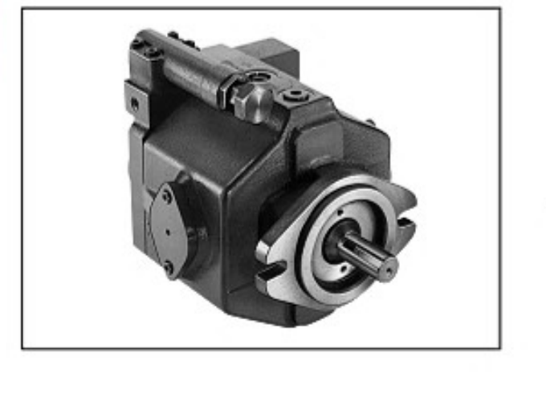
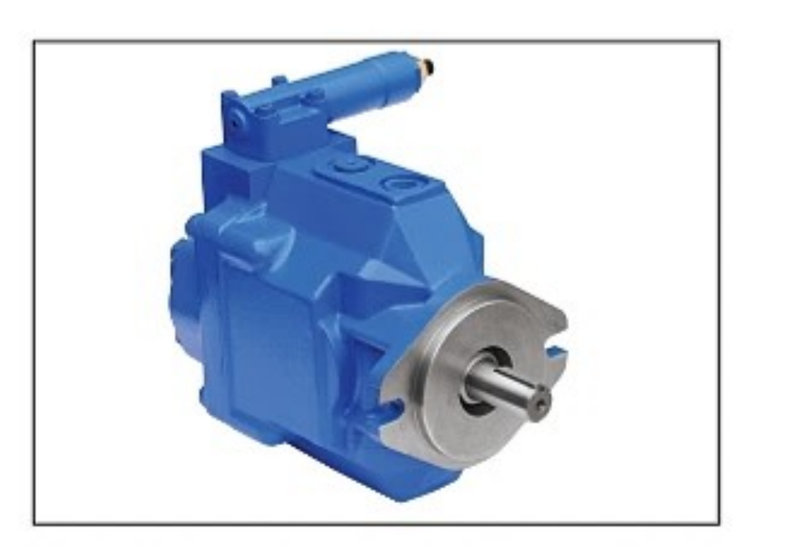
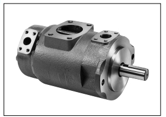
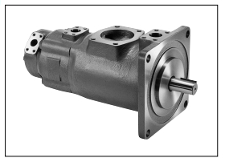
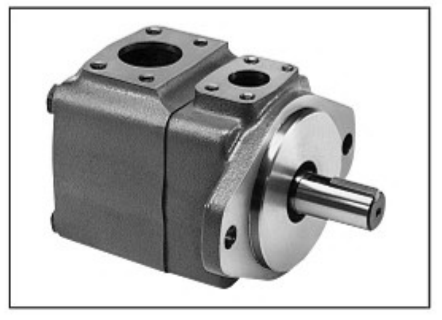
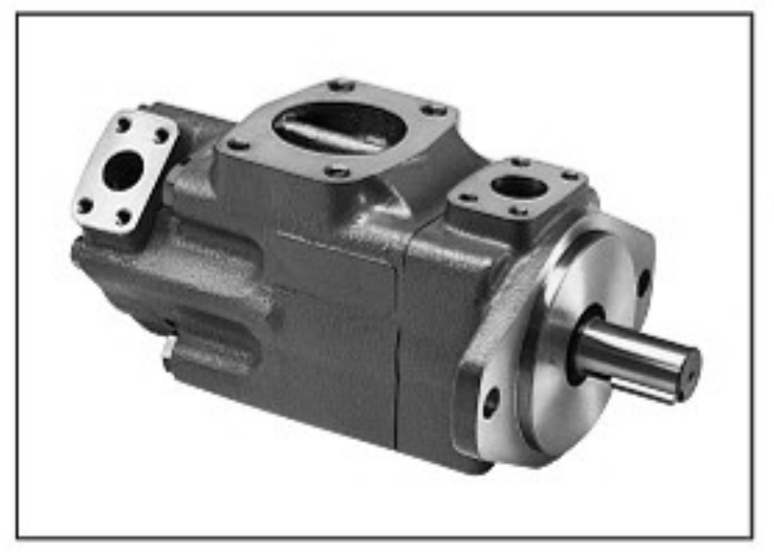
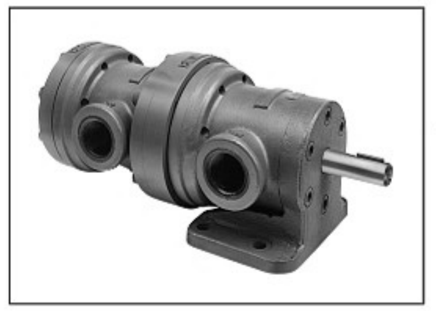
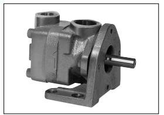

PRODUCT INTRODUCTION
제품소개
유압기기 › 펌프 › 피스톤 펌프 · 정용량형 베인 펌프피스톤 펌프
PISTON PUMP / P**V SERIES
저소음 가변용량형 피스톤 펌프
16 - 130 cm³/rev · 최고 21 MPa
제품 상세보기 →
저소음고압 가변용량형 피스톤 펌프
80 - 130 cm³/rev · 최고 30 MPa
제품 상세보기 →
국산 저소음 가변용량형 피스톤 펌프
21 MPa · 1,800 min⁻¹ · 16 – 21 cm³/rev
제품 상세보기 →정용량형 베인 펌프
VANE PUMP / SQP/SQPS 1연 SERIES
저소음 정용량형 1연 베인 펌프
17.5 MPa · 1,800 min⁻¹ · 7.5 – 189 L/min
제품 상세보기 →
저소음 정용량형 2연 베인 펌프
17.5 MPa · 1,800 min⁻¹ · 2연 용량 조합
제품 상세보기 →
저소음 정용량형 3연 베인 펌프
17.5 MPa · 1,800 min⁻¹ · 3연 용량 조합
제품 상세보기 →
차량용 고성능 1연 베인 펌프
21 MPa · 2,700 min⁻¹ · 38.3 – 189 L/min
제품 상세보기 →
차량용 고성능 2연 베인 펌프
21 MPa · 2,700 min⁻¹ · 20.4 – 53.5 kg
제품 상세보기 →
정용량형 베인 펌프 V-104·124·134·144
7 MPa · 1,800 min⁻¹ · 5.7 – 119 L/min
제품 상세보기 →
정용량형 2연 베인 펌프 V-108·128·138·148
7 MPa · 1,800 min⁻¹ · 2연 용량 조합
제품 상세보기 →
정용량형 베인 펌프 V20/30 시리즈
17.5 MPa · 3,400 min⁻¹ · 18.9 – 90 L/min
제품 상세보기 →